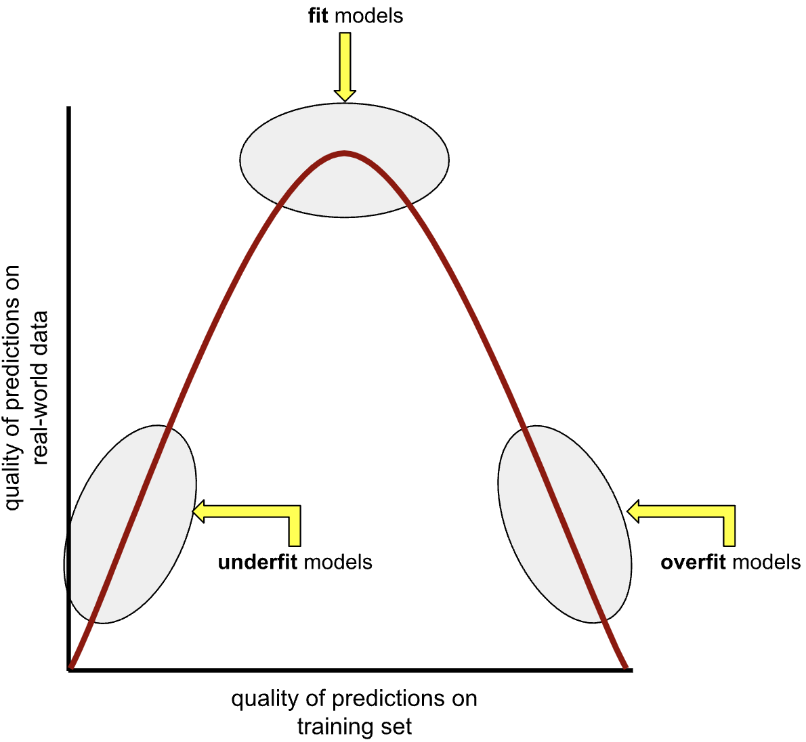
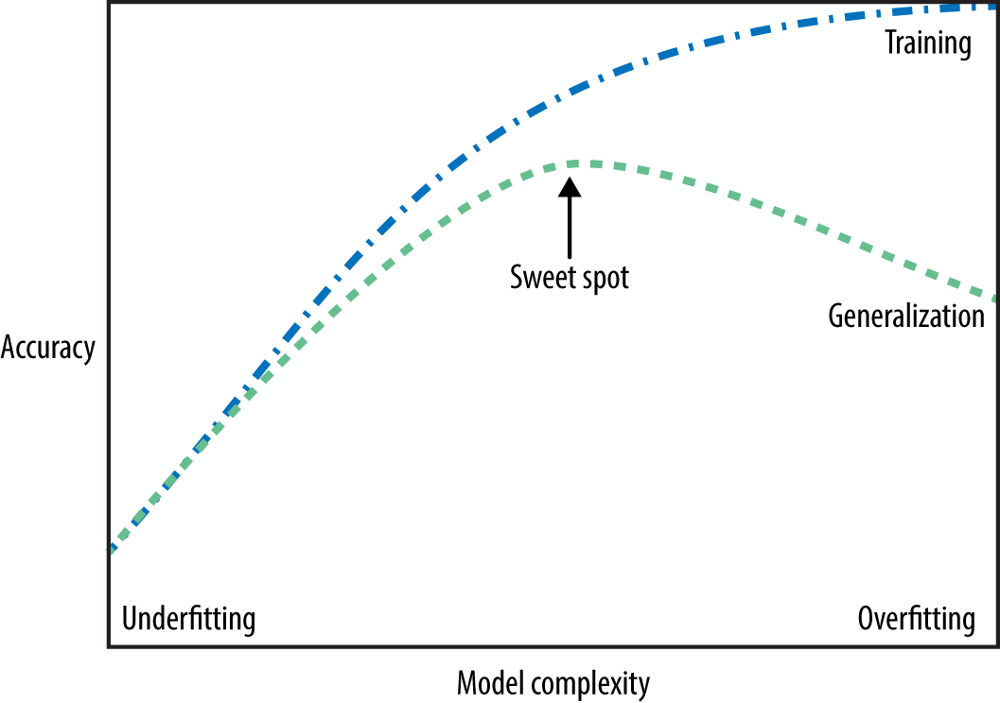

CPSC 330: Midterm 1 review
Announcements
- Nothing new today!
Midterm review
What is machine learning
- ML uses data to build models that identify patterns, make predictions, or generate content.
- It enables computers to learn from data.
- No single model is suitable for all situations.
When is ML suitable?
- ML excels when the problem involve identifying complex patterns or relationships in large datasets that are difficult for humans to discern manually.
- Rule-based systems are suitable where clear and deterministic rules can be defined. Good for structured decision making.
- Human experts are good with problems which require deep contextual understanding, ethical judgment, creative input, or emotional intelligence.
Terminology
- Features (
X) and target (y) - Examples
- Predictions
- Accuracy, error
- Parameters and hyperparameters
- Decision boundaries
ML fundamentals
Important concepts
- Why do we split the data? What are train/valid/test splits?
- What are the benefits of cross-validation?
- What is underfitting and overfitting?
- What’s the fundamental trade-off in supervised machine learning?
- What is the golden rule of machine learning?
Overfitting and underfitting

- An overfit model matches the training set so closely that it fails to make correct predictions on new unseen data.
- An underfit model is too simple and does not even make good predictions on the training data
The fundamental tradeoff

- As you increase the model complexity, training score tends to go up and the gap between train and validation scores tends to go up.
- How to pick a model?
Models
Supervised models we have seen
- Decision trees: Split data into subsets based on feature values to create decision rules
- k-NNs: Classify based on the majority vote from k nearest neighbors
- SVM RBFs: Create a boundary using an RBF kernel to separate classes
- Linear models: Assumption that the relationship between
Xandyis linear
Comparison of models
| Model | Parameters and hyperparameters | Strengths | Weaknesses |
|---|---|---|---|
| Decision Trees | |||
| KNNs | |||
| SVM RBF | |||
| Linear models |
Transformers
sklearn Transformers
| Transformer | Hyperparameters | When to use? |
|---|---|---|
SimpleImputer |
||
StandardScaler |
||
OneHotEncoder |
||
OrdinalEncoder |
||
CountVectorizer |
||
TransformedTargetRegressor |
Data leakage
Features
- Using features that are directly related to the target can cause data leakage.
- Example: If you’re building a model to predict the churn rate of customers in a subscription service (churned or not churned) and you are using a feature like “account deactivation date”.
- Example: If you’re building a model to predict the churn rate of customers in a subscription service (churned or not churned) and you are using a feature like “account deactivation date”.
- If a feature essentially gives away the answer, the model might perform exceptionally well during training but fail to generalize to new, unseen data.
Preprocessing
- Incorporating information from the validation or test data during the preprocessing phase (e.g., scaling based on the distribution of the entire dataset instead of just the training set) can also lead to leakage. This can happen if the transformations applied to the training data are influenced by the whole dataset, thus indirectly feeding information about the test set into the model during training.
Preprocessing to avoid data leakage
Pipelines
- Pipeline is a way to chain multiple steps (e.g., preprocessing + model fitting) into a single workflow.
- Simplify the code and improves readability.
- Reduce the risk of data leakage by ensuring proper transformation of the training and test sets.
- Automatically apply transformations in sequence.
Column Transformers
- In what scenarios do we use column transformers?
- Different transformations for different types of columns (e.g., scaling numerical data, encoding categorical data).
- Handle datasets with heterogeneous data types effectively.
Hyperparameter Optimization
| Method | Strengths/Weaknesses | When to use? |
|---|---|---|
| Nested for loops | ||
| Grid search | ||
| Random search |
Classification Metrics
| Metric | How to generate/calculate? | When to use? |
|---|---|---|
| Accuracy | ||
| Precision | ||
| Recall | ||
| F1-score | ||
| AP score | ||
| AUC |
Regression Metrics
| Metric | How to generate/calculate? | When to use? |
|---|---|---|
| MSE | ||
| RMSE | ||
| r2 score | ||
| MAPE |